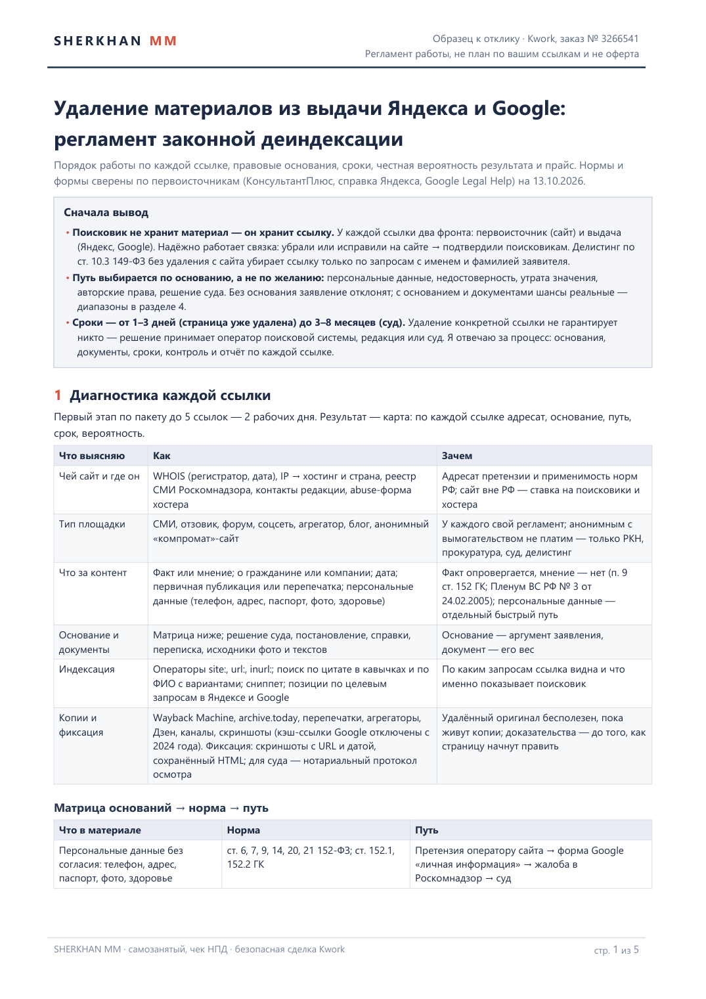
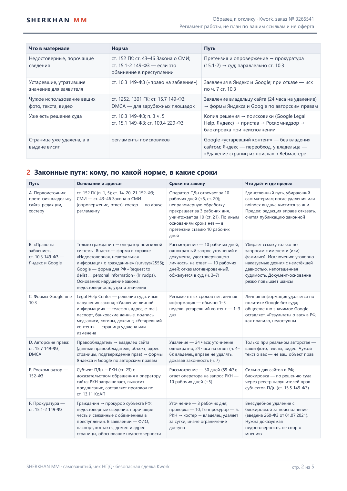
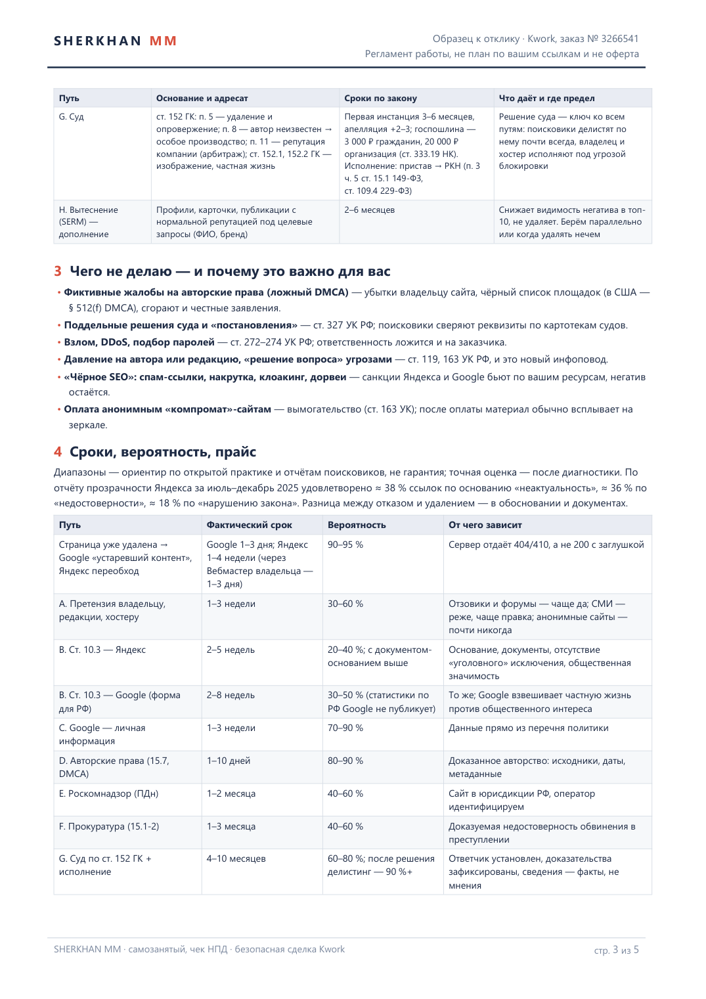
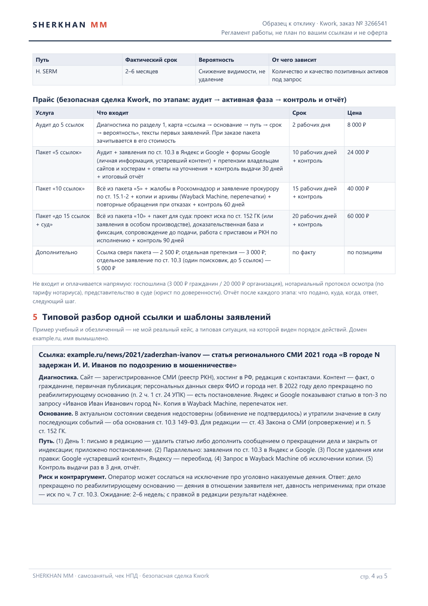
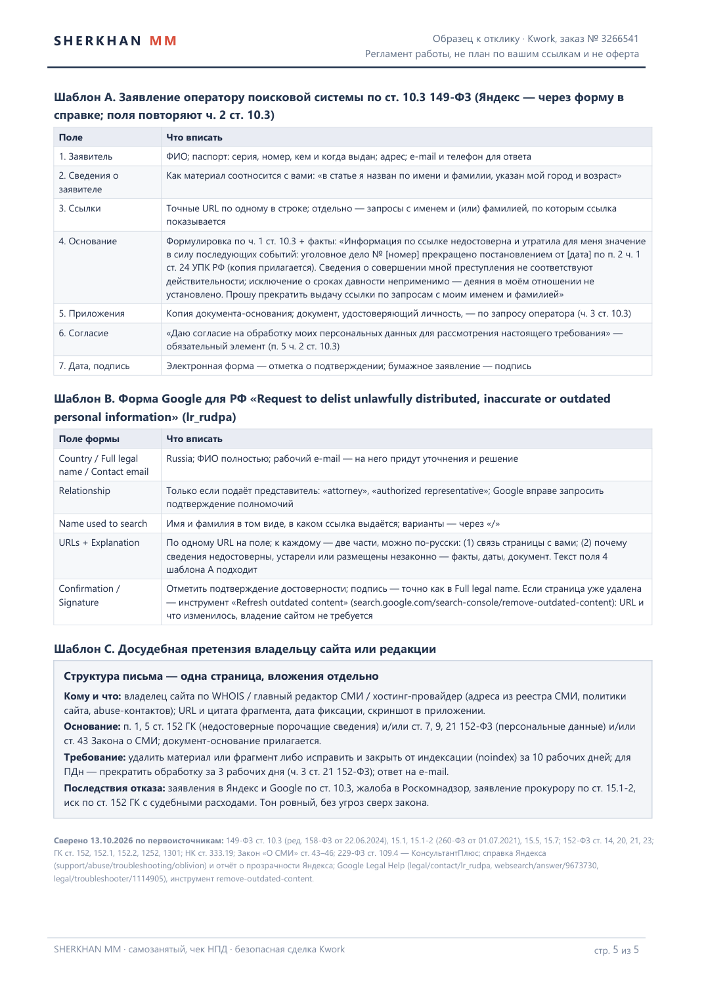

Образец к отклику на заказ Kwork № 3266541: как убираю материалы из выдачи Яндекса и Google законно — диагностика каждой ссылки, пути по ст. 10.3 149-ФЗ, формам Google, 152-ФЗ, ст. 15.1-2, суду, честные сроки и вероятность, прайс, шаблоны заявлений. Это регламент работы, не план по вашим ссылкам.




